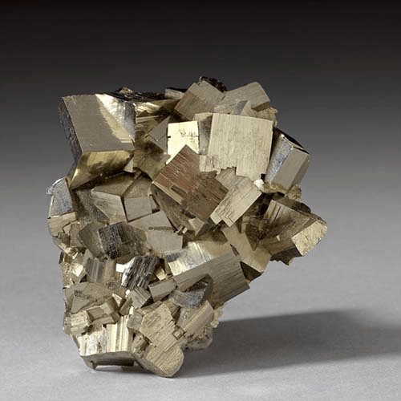

Pyrite - FeS2
Sulfides


Habit: Cubic crystals common, but octahedral and pyritohedral (pentagonal dodecahedra) possible with Striations, also commonly granular, globular, framboidal, stalactitic. Pale brass-yellow, sometimes with iridescent tarnish, Metallic Luster, opaque.
Environment: The most widespread and most common sulfide mineral, occurs in almost all geological environments such as Hydrothermal veins, in contact metamorphic rocks, and in sedimentary rocks, such as shale, coal and limestone
Etymology: Name is derived from the Greek pyr, meaning 'fire' because pyrite emits sparks when struck by iron. Pyrite is perhaps better known by its informal name "fool's gold" due to its similar appearance to gold.